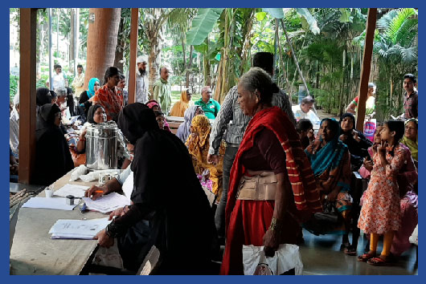
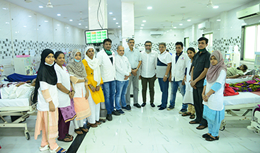
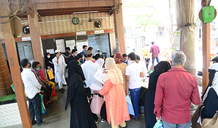
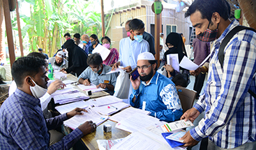

NUMBER OF BENEFICIARIES

4000
Medical Aid ▼

8000
Cancer ▼

000K+
Dialysis

000CR+
Education

ABOUT
Khidmat Charitable Trust KCT
Khidmat Charitable Trust (KCT) is a Non-Government Organization (NGO) registered under the Government of India’s Public Trust Registration Act of 1950 on 12 December 2001. Based in Mumbai, KCT’s registration no is E19852.
In 2001, by the grace of Almighty Allah, we established our start-up with the key objective of providing every possible medical aid to the underprivileged and deserving section of our society. Our aim is to provide them moral and economical support during the treatment of a critical illness.
Our Aim
To help underprivileged, deserving & needy people with their medical needs.
Our Vision
Providing compassionate, dignified, and prompt care for all patient needs
Our Mission
To promote, restore, and maintain the health of all people.
call any time
+91 86579 70797
Key Programs
Treat your sick by giving Sadaqah (charity)
Medical
Monetary help with the purchase of life saving medicines for patients caught in an Emergency Health Crises, Diagnostics & complete funding for hospital.
Dialysis
Free dialysis and essential medicines for immediate requirements. Free light breakfast for patients
Education
Partially or fully bearing the educational cost (tuition and coaching fee) of meritorious students, whose parents cannot support them financially, through scholarships and other financial assistance programmes.
Food
Provide ration for unprivileged families, who are struggling to make ends meet. Also, the monthly ration and Ramzan aid benefit not only the Muslims but all people.
HOW BENEFICIARIES RECEIVE OUR AID?
STEP - 1
Applicants seeking medical aid must submit a written request, after which Khidmat Charitable Trust reviews it and conducts a meeting to assess their needs.
STEP - 2
After verifying the case, applicants must complete a 'Khidmat Enrollment' form with a photo, ID proof (PAN/Aadhaar), and a doctor's prescription for medical aid.
STEP - 3
KCT's Medical Officer reviews the procedure, and a pharmacist screens the prescription while estimating the costs for medicines and procedures.
STEP - 4
The Trustees review all forms and give final approval for prompt action. Medicines are delivered with open seals to prevent reselling, and payments are made via cheque, not cash.
CASE STUDIES
Patel Mohsin
Patel Mohsin, a diligent MBBS student at GMC Chandrapur, has overcome financial challenges with the assistance of Khidmat Charitable Trust (KCT). Despite an elder brother who doesn't contribute to the household, Mohsin's father, a retired Clerk with a pension of Rs. 15,000, supports the family. Mohsin achieved 82% in SSC, 77% in HSC, and scored 570 in NEET. KCT stepped in, providing Rs. 36,000 for mess expenses, a Rs. 63,000 Demand Draft for his first- year academic costs, and a laptop for studies. Beyond financial aid, KCT offers mentorship, emphasizing the holistic support needed for Mohsin's medical education journey. This case exemplifies the transformative impact of community support on educational aspirations in the face of financial constraints.
Iftekhar Ahmed Shaikh
Iftekhar Ahmed Shaikh is 48-years-old. A resident of Sankli Street, Madanpura, Mumbai, his family comprises of his wife, two daughters and a son. As a sole bread-earner of the family, he previously worked as a bag manufacture and supplier, wherein he used to earn Rs. 20,000/- per month. On 12th May,2018 he met with an accident. He fell down to the basement of an under-construction building from a height of 18-19 feet and got paralysed. All his medical expenses are being borne by Khidmat Charitable Trust. Without this support, it would have been very difficult for him to manage his personal, household and medical expenses.
Nanda Shridhar Dange
Aged 55 years, she got divorced 25 years ago and works as a sweeper at Nair Hospital. She lives alone in a quarter provided by the hospital and draws a monthly salary of Rs.10,000/- Six months ago, during a routine check-up by Dr Salman of Nair Hospital, it was discovered that both her kidneys are non-functional. Dr. Salman referred her to KCT for dialysis. For the past six months, she has been receiving regular Dialysis at the KCT Dialysis Centre that she could not afford at a regular hospital.
Shabina Bano Mohammed Zubair Shaikh
Shabina Bano Mohammed Zubair Shaikh is a 31 years old women living alone with his three children Junaid, Ubaid, Naved in shastri nagar govandi. Since last 13 years of marriage, she was been torture and violated by her husband. Once her husband slapped her on her face which causes to Eardrum Rupture. From last three and a half year she left her husband and started working as a house keeping. From last three years all her medical and financial expenses are managed by Khidmat Charitable Trust. Monthly ration provision, medical help and financial expenses are met by KCT.
Shaikh Mohammed Aleem
Aleem is a 66 years old man residence of jogeshwari. His family comprises with his wife and 5 children. He is a solo bread earner of his family with a monthly income of Rs 6000/-. One year before he diagnosed with neck thyroid. After suffering entire year Aleem came to KCT for help. One Month before with all the medical and operation expenses KCT organized his operation at Millat Hospital. Two of his children are mentally handicap since childhood and one of his daughter is suffering from lifetime Epilepsy and Tuberculosis even their medical expenses are managed by KCT. Aleem is very happy and thankful to KCT for help.
Shaikh Mohammed Aleem
Amirunnisa is a 29 years old lady residence of Govandi Shivaji nagar. Her family comprises With Four members including his parents and brother. His brother is a solo bread earner of his family with a daily wage of 400/- Rs. He works at a construction site. From last 16 years Amirunnisa is suffering from a severe Neurological disorder name Parkinson's Disease. In this Disorder the patient central nervous system affects movement, often including tremors in the entire body. After suffering from last many years, she finally came to KCT for help and from last 3 years all her medical and treatment expenses are met by KCT. She is monitored under Dr.Pawan Ojha at JJ Hospital.
Faizan Galib Dhanse
A 24 years old man residence of Mumbai Central. His family comprises with 6 members, he is the elder one in his family. After the death of his father all the responsibilities of his family has come on the shoulder of faizan. His father's entire business dissolved due to pandemic. Faizan is a brilliant student who scored 85% is HSC exam and further decided to become a MBBS doctor. His score in NEET was 477/720. He got admission in Terna Medical College at Nerul. The entire remaining due amount of his fees was 5,80,000/- which was paid by Khidmat Trust. KCT helped faizan not to quit his studies in between and carry forward the dream of his father for him becoming a doctor.
Irshad Khan
Irshad khan is a 36 years old man residence of Mumbai his family comprises with a wife and his 5 children. 7 years before he was a Chef in a local Chinese restaurant with a daily wage of Rs 700/-. Six years before he diagnosed with Kidney failure and Doctors recommended him For Dialysis Every alternate days. His financial condition was not as good as to afford the cost of dialysis for the rest of his life. With the grace of God he got to know about the Khidmat Charitable Trust Free Dialysis center At nagpada. From last 6 years all his dialysis, Medicines Expenses are met by KCT. Due to his disease he is know enable to work and earn so KCT is providing him monthly ration and also helping him financially.
Sajida Nasir Khan
Sajida is a 42 years old lady residence of sundar nagar colaba. Her family comprises with her husband, mother in law and her 2 son's. Four years before she got a paralyses and epilepsy attack and since then she was unable to do anything by her own. Her husband Nasir khan was a taxi driver 3 years ago he left his job to take care of his wife. Her treatment is going on at JJ Hospital. All her medical expenses including medicines, MRI and timely injections are met by Khidmat Charitable Trust.
Mohammed Ayaan Ashfak Shaikh
Mohammed Ayaan Ashfak Shaikh, an 18-year-old resident of Latur, was leading a normal life after completing his HSC until a fateful car accident changed everything.Ayaan suffered severe injuries, including a coma that lasted for 25 days at Sahyadri Hospital in Latur. Tragically, he lost one of his hands and required surgeries on both of his legs, which led to a six- month period of wearing plaster casts. Later he faced severe infections in his legs for which he took a transfer to mumbai for further treatment. In Mumbai, Ayaan sought medical assistance at Prince Aly Khan Hospital, where the estimated cost for his leg operations totaled six lakhs. Additionally, he required a neck operation, which was estimated at 3.5 lakhs.
Mohammed Ayaan Ashfak Shaikh
Mohammed Ayaan Ashfak Shaikh, an 18-year-old resident of Latur, was leading a normal life after completing his HSC until a fateful car accident changed everything.Ayaan suffered severe injuries, including a coma that lasted for 25 days at Sahyadri Hospital in Latur. Tragically, he lost one of his hands and required surgeries on both of his legs, which led to a six- month period of wearing plaster casts. Later he faced severe infections in his legs for which he took a transfer to mumbai for further treatment. In Mumbai, Ayaan sought medical assistance at Prince Aly Khan Hospital, where the estimated cost for his leg operations totaled six lakhs. Additionally, he required a neck operation, which was estimated at 3.5 lakhs.
Ayaan Shaikh
Realizing the financial challenges ahead, Ayaan's situation took a positive turn when he received invaluable support from the Khidmat Charitable Trust (KCT) through their dedicated manpower and connections. With the proactive assistance of KCT, Ayaan's leg operations were successfully conducted at JJ Hospital and Bombay hospital, known for its expertise in such cases. Throughout his arduous journey, Ayaan underwent a total of four surgeries, enduring both physical and emotional challenges. Today, Ayaan expresses profound gratitude to KCT, Dr. Rajiv Nirodkar of Bombay hospital and Dr. Bhandari bone specialist for their active involvement, expertise, and compassionate care.
Md. Umar
Md. Umar, a 12-year-old boy from Malegaon his family comprises with his mother and a younger sister. He faced adversity after losing his alcoholic father. An accident involving an electric current from a water pump left him unconscious and resulted in behavioral issues such as self-hitting and poor comprehension. After being treated in the ICU for 10 days and not getting proper treatment his mother shifted to mumbai for his treatment after receiving assistance from the Khidmat Charitable Trust, Umar underwent further treatment at J Hospital in Mumbai to address his behavioral challenges and improve his overall well-being.
Muskan
Muskan, a 24-year-old woman, resides with her family, which includes her mother, father, and two sisters. Unfortunately, her 56-year- old father is facing mobility challenges and experiencing mental instability. Both of Muskan's sisters are employed as waitresses to meet their daily living expenses. Muskan herself is grappling with health issues, namely hernia, thyroid complications, and a stomach infection. Despite undergoing five surgeries in her hometown, her condition did not improve and even deteriorated further. Thankfully, Muskan and her family are receiving assistance from the Khidmat Charitable Trust (KCT). The KCT has stepped in to facilitate Muskan's treatment at JJ Hospital and generously cover all associated medical expenses.
Zafar Hussain Ansari
Zafar Hussain Ansari, a 50-year-old resident of Ghatkopar, has faced significant challenges, including paralysis and brain damage, as well as the loss of his mentally challenged daughter. Previously employed at a garment factory for 14 years until his health deteriorated, he now relies on his brothers for financial support as he cannot work. KCT has been instrumental in covering his medical expenses for the past six months, thanks to donations received. This support highlights the crucial role that charitable contributions play in assisting individuals like Zafar and underscores the ongoing need for donations to continue helping those in similar situations.
Our latest Event

2 Reactions
DIALYSIS CENTRE
During the course of running our Medical Aid program, KCT Trust members would come across numerous cases in need of urgent dialysis treatment. Since dialysis treatment is an on-going cost, for the underprivileged,…
Read More

2 Reactions
RAMZAN AND MONTHLY RATION AID
Among the best of deeds is to feed the poor and the deserving” – Bukhari Sharif” Several families living on the edge of starvation are also supplied with monthly ration and relief in…
Read More

0 Reactions
WHY SHOULD ANYONE APPROACH KCT FOR HELP AND ASSISTANCE?
Medicines from the KCT are delivered to the patient’s doorstep the very same day. It is ensured that the medicines strips are cut and the bottles are unsealed to avoid resale/misuse of medicines.…
Read More